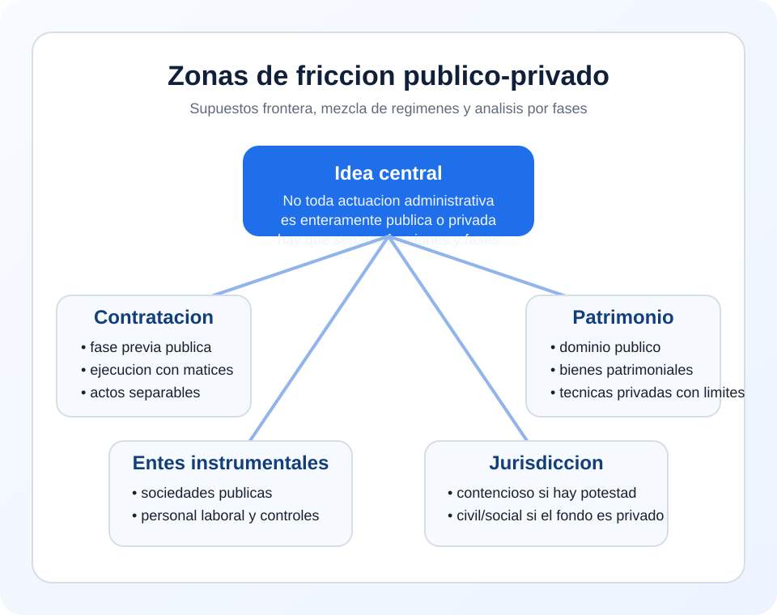

Contratacion
Conviven fase publica de preparacion y aspectos negociales o de ejecucion.
Tema 1 · Punto 2.4 · Resumen
Son los supuestos frontera en los que la actuacion del sector publico mezcla elementos de Derecho publico y Derecho privado, lo que obliga a precisar que normas rigen cada fase, que jurisdiccion conoce del conflicto y que controles siguen siendo exigibles.
Idea-clave de examen: no basta con saber que interviene una Administracion; hay que determinar la funcion ejercida, la norma aplicable y la fase concreta de la controversia.

Hay zona de friccion cuando una misma actuacion administrativa presenta componentes publicos y privados, de modo que no puede calificarse de forma simple sin examinar cada aspecto por separado.
| Criterio | Pregunta clave |
|---|---|
| Sujeto | Quien actua exactamente dentro del sector publico |
| Funcion | Se ejerce potestad publica o gestion patrimonial/economica |
| Norma | Que ley regula el aspecto discutido |
| Fase | Se discute una decision previa publica o el contenido material privado |
Conviven fase publica de preparacion y aspectos negociales o de ejecucion.
Diferencia entre dominio publico y bienes patrimoniales.
Uso de tecnicas mercantiles con controles propios del sector publico.
Relacion laboral con limites y principios de acceso de naturaleza publica.
La jurisdiccion sera contencioso-administrativa si se discute el ejercicio de una potestad publica; civil o social si lo controvertido es el contenido privado o laboral de la relacion.
Clave practica: importa menos el nombre externo de la operacion que la naturaleza juridica del aspecto impugnado.
Formula util para examen: las zonas de friccion son supuestos frontera donde se mezclan elementos de Derecho publico y privado, por lo que hay que identificar el regimen aplicable a cada fase y el control jurisdiccional correspondiente.